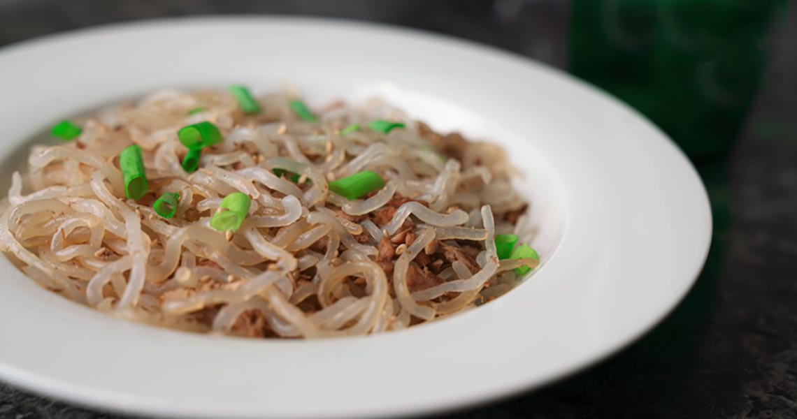
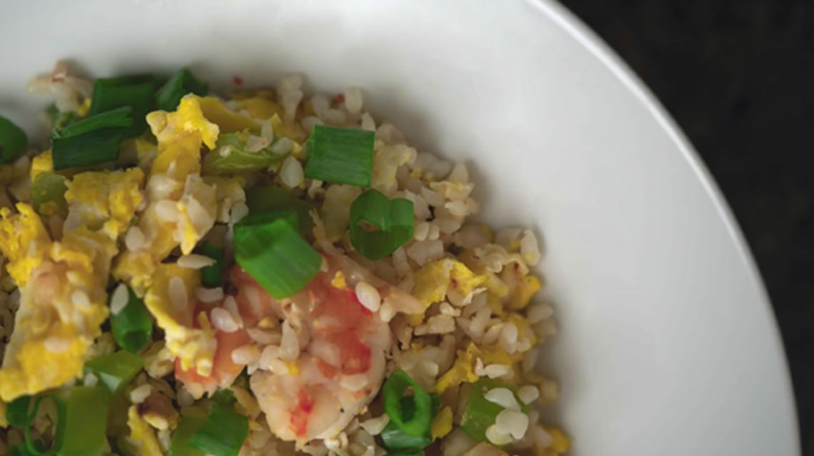
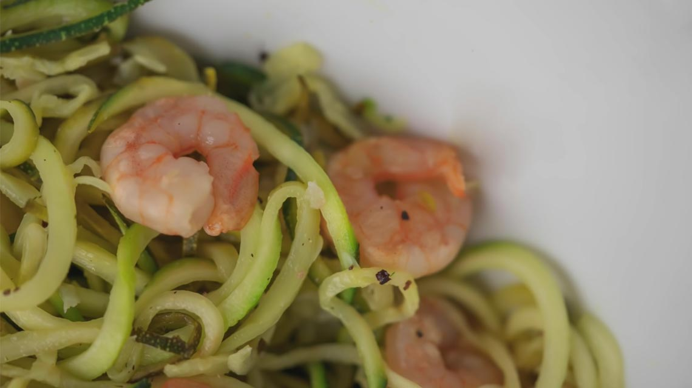
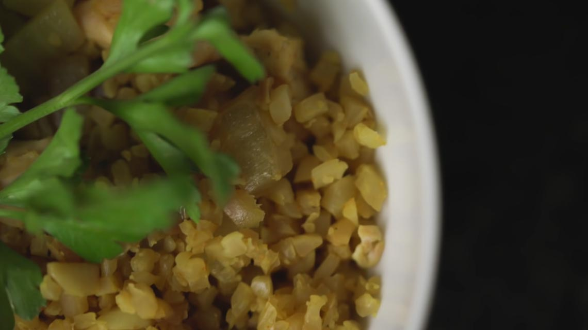
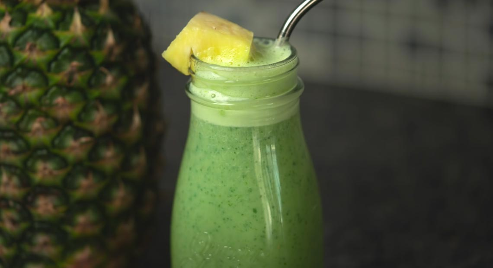
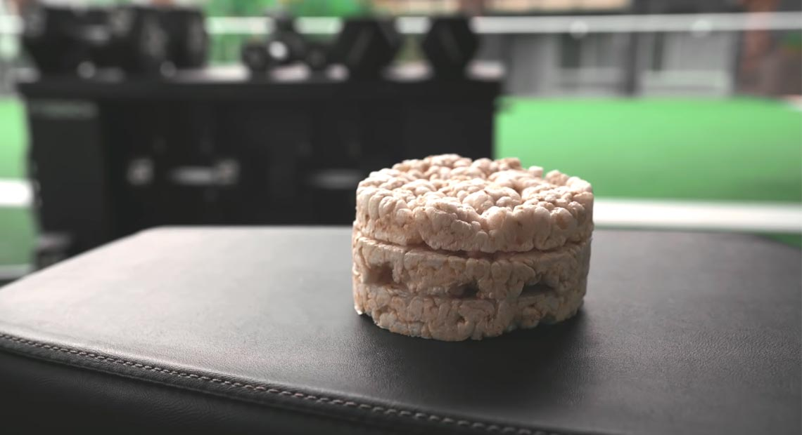

我相信現在大多數小夥伴已經知道對於減脂減肥來說，吃更加重要，然而在實際操作的過程中我們往往因為太餓或者太饞時常管不住自己，那到底有沒有一種辦法是我們平時不挨餓，也能夠達到減脂減肥的效果呢？今天這篇文章就給大家推薦五種低卡食物以及它們的做法，讓大家輕鬆達到減脂減肥的效果。
魔芋
首先第一個給大家推薦是魔芋。魔芋可能大家已經非常熟悉了，它不僅有很好的口感，而且每200g裡只有12卡，6g左右的碳水化合物，相比於普通的米飯，每200g裡有258卡，它的熱量幾乎可以忽略不計了。
所以如果你平時特別喜歡吃米飯、麵條這類碳水，可以嘗試把它們換成魔芋製成的米和面，這樣的話同樣的重量不僅你可以吃的更多同時熱量也會更低。但值得注意的是，小編並不推薦大家過度食用魔芋製成的零食，因為它的糖和鈉含量往往會很高，而普通的魔芋幾乎是沒有任何味道的，接下來給大家推薦兩種魔芋的做法。
做法1:吞拿魚魔芋拌面
大家只需要準備魔芋面、吞拿魚罐頭、以及醬油就可以了。
首先把鍋加熱，然後噴一層油，將吞拿魚罐頭倒進鍋裡，翻炒幾分鐘後再將魔芋面放進去，稍微倒一點醬油，再攪拌2分鐘就可以出鍋了。
通常還可以加一點蔥花和芝麻，是一道非常簡單方便的減脂餐。

做法2:雞蛋蝦仁炒魔芋飯
喜歡吃米飯的人可以把魔芋面換成魔芋米，它們的營養成分都是一樣的。
我們需要準備一瓣蒜、一把蝦仁、一個青椒、三顆雞蛋以及一袋魔芋米。
首先在炒鍋上噴一層油，熱鍋後將切好的蒜末放進鍋裡，炒出香味，等蒜變成金黃色，分別放入蝦仁、青椒、一點點鹽、胡椒以及魔芋米一起翻炒幾分鐘，最後把三顆雞蛋打在旁邊，慢慢攪拌均勻就可以出鍋了。
如果大家覺得脂肪比較高，可以把雞蛋去掉，是一個非常低卡同時又保有普通炒飯味道的減脂餐。

西葫蘆
第二種給大家推薦的西葫蘆，西葫蘆不僅富含維生素、礦物質，更重要的是它95%都是由水構成的，卡路里非常低，每200g只有34卡。如果你特別喜歡吃麵條，這裡推薦大家徒手一個刨絲器，用它把西葫蘆做成面之後，和普通的面條比起來，同樣是200卡，你可以吃的非常多，小編最喜歡的做法是檸檬蝦仁炒麵。
大家只需要準備一瓣蒜，一個檸檬、兩根西葫蘆、一把蝦仁和一根香菜。
首先把用刨絲器把西葫蘆切成麵條的形狀，蒜、香菜切碎，把鍋加熱、噴油之後，先放入蝦仁煎一分鐘，然後分別放入鹽、胡椒和蒜末，擠點檸檬汁在鍋裡，這樣口感會更好，最後只需把香菜和所有的西葫蘆放進鍋裡，和做好的蝦仁攪拌一起就完成了。它既保證了蛋白質的量，也能給予我足夠的飽腹感。

花椰菜
第三個給給大家推薦的食物是花椰菜，和西葫蘆一樣，它本來就是一個卡路里很低但同樣充滿水分的食物，同時它還富含膳食纖維，很容易讓我們有飽腹感。近幾年比較流行的吃法是把花椰菜做成米飯的形狀來代替米飯，每200g花椰菜米同樣只有50卡和10g碳水，遠低於普通米飯的熱量，小編最喜歡的做法是咖哩雞胸花椰菜飯。
大家需要準備一瓣蒜、一片雞胸、一碗花椰菜米、一塊洋蔥以及咖哩粉。首先將雞胸切塊，撒鹽和胡椒醃製10分鐘，然後將為好的洋蔥和蒜放進鍋裡，直到炒出香味，倒入雞胸，放一點點醬油，等雞胸肉變成件黃色，倒入花椰菜米和咖哩粉，在翻炒2分鐘就完成了。用這個辦法，就不用每天吃水煮雞胸肉了。

芹菜
芹菜不僅卡路里很低只有14卡，更重要的是它富含不可溶性纖維，會幫助我們更好的排便。同時芹菜中含有的化學物質3-止丁基苯酞有消炎以及防止肌肉痙攣的作用，這也可能很多健美運動員都會在備賽期吃它作為零食。對於小編來說，因為它口感比較脆，在減脂期，會經常把它當水果來吃也是完全沒有問題，從而避免糖分過高，當然最喜歡的還是把它做成奶昔。
大家只需要把杏仁奶、一根香蕉、兩根芹菜、一把菠菜、一片姜以及一勺蛋白粉打在一起，就是一個非常低卡的奶昔。

米餅
第五種給大家推薦的食物是米餅，如果你特別喜歡吃那種很脆的零食，比如薯片或者餅乾，米餅是非常好的替代物。因為它本身就是由米飯做成的，沒有任何的添加物，同時保留了零食的口感。每一塊米餅有40卡、8g碳水、1g蛋白質和0g脂肪。如果把它和不同形式的米比起來，同樣的卡路里它的體積會大很多，而因為我們的胃大小是一樣的，體積越大就越容易讓我們有飽腹感。

總結
以上呢就是給大家推薦的5種食物，如果在吃這些食物的過程中有任何不舒服甚至過敏的情況，一定要馬上停止，因為飲食是因人而異的。近兩年，隨著大家對於控制體重還有健康意識的覺醒，很多食物都有了低卡的版本。如果大家希望減脂減肥的話，完全沒有必要徹底改變自己的飲食計畫，替換1-2個也會有非常好的效果，最後希望大家都能不用節食也能維持好身材。